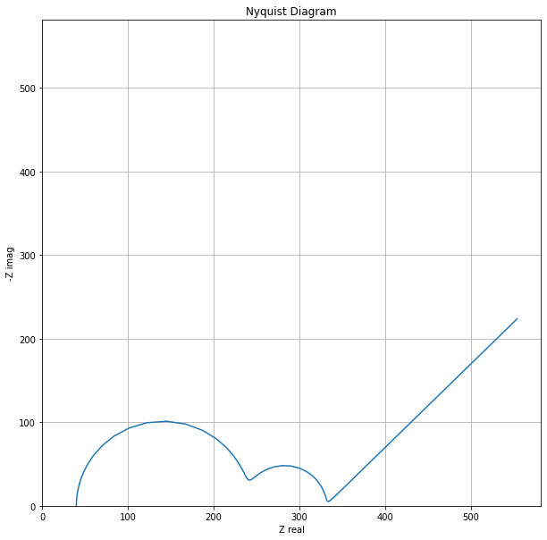
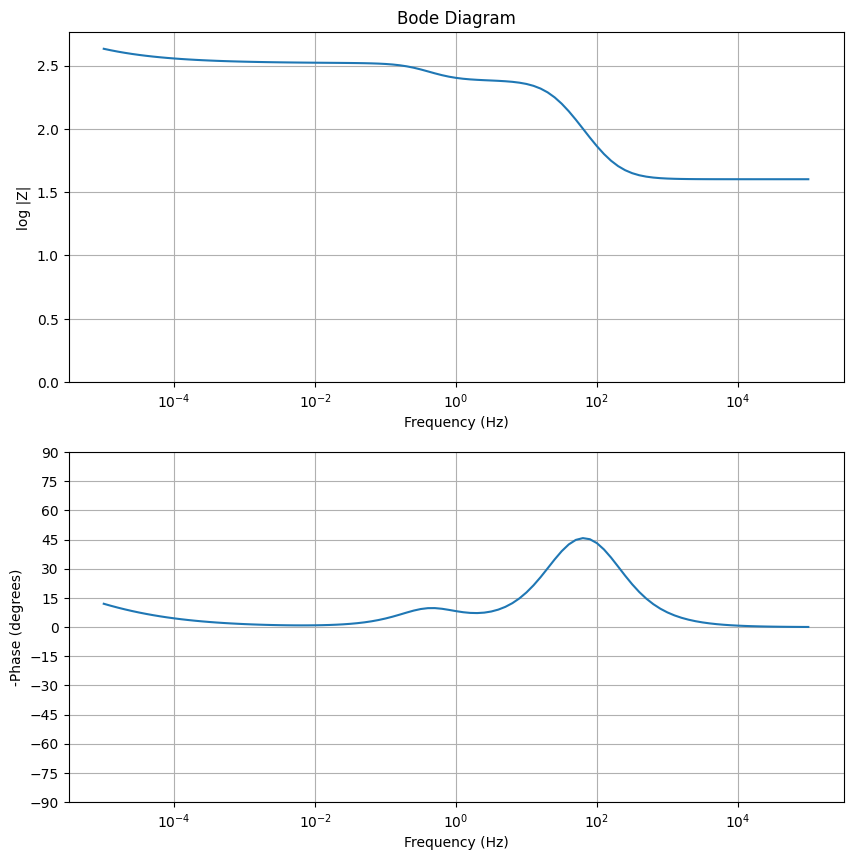

import numpy as np
import pandas as pd
import matplotlib.pyplot as plt
from scipy.special import gammaElectrochemical Impedance Spectroscopy
experimentation
statistics
data-science
batteries
Attention
This page is correct, but incomplete. It’s live, but I would like to expand the depth of the material, visuals, and code.
On the short list to include later:
- Curve fitting with experimental data
- Expansion on the Fourier transform aspects of EIS
- Testing protocol design
- Fourier / Laplace considerations
- An impedance model
- Probably other stuff
- Electrochemical Impedance Spectroscopy (EIS) is a technique for breaking apart a cell into its component parts to determine the resistance contributions of the electrodes, the electrolyte, any interfaces, and mass transfer of the components moving around within the cell
- EIS does this by converting from the time domain to the frequency domain using a Fourier Transform
- EIS requires specific hardware, special handling of the data, and a lot of time
- EIS-capable testing channels cost more normal testing channels
- EIS happens in the frequency domain, requiring separate files from typical time domain charging and discharging
- If low frequency measurements are needed, it can take upwards of 24 hours for a single data point
First we need to import a couple libraries:
Ohm’s Law
- Much of battery chemistry is applying Ohm’s Law, where the value for resistance is determined by the build of the cell. Ohm’s Law can be written as:
- Change in Voltage = (Change in Current) x Resistance
Terminology
- A Transfer Function is
Electrochemical Impedance Spectroscopy
Electrochemical Impedance Spectroscopy, or EIS for short, is an analytical technique for probing the inner workings of an electrochemical system like a battery or fuel cell. In principle, it could also be used for any unknown electrical circuit. It works by introducing unit impulses to the circuit at a range of frequencies and measuring the impedance.
Gamry, a manufacturer of potentiostats that can be used to perform EIS measurements, has a good primer on the subject.
I’m also familiar with the math behind EIS by a background in Control Theory and didn’t learn it as an electrochemist might. So the wording may make more sense to an electrical engineer or chemical engineer than it might an electrochemist (who is more likely to use it).
The short explanation is an equivalent circuit is set up with several individual circuit elements and the liberal application of Ohm’s Law and worked up using either Laplace Transformations (as I do here) or Fourier Transformations (a special case of Laplace Transformations and how most EIS literature does it). The impedance response is a complex number.
The advantage to doing it in the frequency domain is all the math is algebra and all the complicated dynamics of the differential equations are removed by the transform. Working with the data as Laplace Transforms also allows (usually) convenient conversion between frequency and time domains.
A Gamry Interface 1010E Potentiostat (the machine I’m most familiar with) has a range of 2 MHz to 10 μHz. Low frequencies take a long time to run in practice, but may be necessary to probe things like diffusion.
Why does EIS work?
EIS performs a small pertubation and linearizes around a fixed DC operating point. The
Impedance Model
The one substantive omission is linearity / small-signal. The draft never states why EIS works: the cell’s I–V behavior is nonlinear (Butler–Volmer, Nernst, diffusion), so EIS applies a small perturbation and linearizes around a fixed DC operating point. That local-linearity + time-invariance (LTI) assumption is the entire foundation — it’s why the algebra-only frequency-domain treatment is valid, it’s what Kramers–Kronig checks, and it’s the hinge for the SOC discussion below. I’d add a short paragraph on it.
Two smaller ones:
You describe EIS as “introducing unit impulses at a range of frequencies.” Classic single-sine EIS applies a sinusoid at each frequency and measures the steady-state response; broadband/FFT-EIS applies one wideband signal (step/multisine/noise) and transforms. An impulse contains all frequencies at once, so “impulse at a range of frequencies” mixes the two pictures. From a systems view calling Z(jω) the impulse response’s transform is defensible, but for readers it’s worth separating “what the math is” from “what the instrument does.” The PDF’s “battery chemistry is applying Ohm’s Law over and over” oversimplifies — only the ohmic overpotential is truly Ohm’s law; activation and concentration overpotentials aren’t. Your differential phrasing “ΔV = ΔI × R” is actually the better framing (it’s the small-signal differential resistance EIS measures), so I’d lean into that and drop the “over and over” line.
The Laplace / SOC-as-time section, and where the literature actually is
Now that I can see the actual derivation, it’s clearer than my guess last time. You’re not really doing an inverse Laplace over an SOC axis — you’re taking the already-inverse-transformed time-domain step responses (the √t Warburg, etc.) and mapping physical time to SOC via t = 3600x/C. That’s a reasonable modeling move, but I’d retire the “do an Inverse Laplace Transform to see how each element evolves over SOC” phrasing, because it oversells what’s happening and is the sentence a reviewer will pounce on.
There are also two physics limits to state honestly, since you want rigor:
The Warburg √t term is the semi-infinite diffusion response. It only holds until the diffusion layer reaches the finite electrode dimension; after that you’re in finite-length (bounded) Warburg territory and the √t law breaks. So your model is an early-discharge / short-time approximation, and it’s worth saying so.
And using small-signal EIS parameters (R, W) to predict a full large-signal discharge is exactly the LTI extrapolation from the linearity point above. Freezing R and W as constants also contradicts the rest of the deck, whose premise is that they evolve with SOC.
None of that kills the idea — it just bounds it. For grounding it in real literature, the established frameworks this connects to (search terms, since I can’t pull citations here):
Distribution of Relaxation Times (DRT) — the rigorous, literature-heavy way to turn a spectrum into a time-constant spectrum without committing to a circuit topology. Peukert’s law and rate-capability / diffusion-limited capacity models — your “capacity vs C-rate from a diffusion term” is essentially a physics-based Peukert relation; this is where to anchor the capacity result. Single-Particle Model (SPM) and Doyle–Fuller–Newman (DFN / P2D) — the standard physics-based discharge models; your expression reads as a stripped-down SPM. Operando / dynamic EIS and time-varying (LPV) impedance — for the honest “SOC drifts during measurement, so LTI breaks” case. Kramers–Kronig validation — cite this as your stationarity/linearity check.
If you frame the SOC extension as “a deliberately simple diffusion-limited toy model, valid in the short-time semi-infinite regime, that recovers a Peukert-like capacity–rate relation,” it’ll stand up fine — the rigor comes from stating the assumptions, not from claiming more than the model does.
Next let’s define the frequency range from 10 μHz to 0.1 MHz:
Here I’m going to: * Set up Python classes for common circuit elements * Set up a Python class for an Equivalent Circuit made of of those individual elements * Plot Nyquist and Bode diagrams for example data * Return those data as a pandas dataframe
myFrequencies = np.logspace(5,-5,num=101)
myFrequenciesarray([1.00000000e+05, 7.94328235e+04, 6.30957344e+04, 5.01187234e+04,
3.98107171e+04, 3.16227766e+04, 2.51188643e+04, 1.99526231e+04,
1.58489319e+04, 1.25892541e+04, 1.00000000e+04, 7.94328235e+03,
6.30957344e+03, 5.01187234e+03, 3.98107171e+03, 3.16227766e+03,
2.51188643e+03, 1.99526231e+03, 1.58489319e+03, 1.25892541e+03,
1.00000000e+03, 7.94328235e+02, 6.30957344e+02, 5.01187234e+02,
3.98107171e+02, 3.16227766e+02, 2.51188643e+02, 1.99526231e+02,
1.58489319e+02, 1.25892541e+02, 1.00000000e+02, 7.94328235e+01,
6.30957344e+01, 5.01187234e+01, 3.98107171e+01, 3.16227766e+01,
2.51188643e+01, 1.99526231e+01, 1.58489319e+01, 1.25892541e+01,
1.00000000e+01, 7.94328235e+00, 6.30957344e+00, 5.01187234e+00,
3.98107171e+00, 3.16227766e+00, 2.51188643e+00, 1.99526231e+00,
1.58489319e+00, 1.25892541e+00, 1.00000000e+00, 7.94328235e-01,
6.30957344e-01, 5.01187234e-01, 3.98107171e-01, 3.16227766e-01,
2.51188643e-01, 1.99526231e-01, 1.58489319e-01, 1.25892541e-01,
1.00000000e-01, 7.94328235e-02, 6.30957344e-02, 5.01187234e-02,
3.98107171e-02, 3.16227766e-02, 2.51188643e-02, 1.99526231e-02,
1.58489319e-02, 1.25892541e-02, 1.00000000e-02, 7.94328235e-03,
6.30957344e-03, 5.01187234e-03, 3.98107171e-03, 3.16227766e-03,
2.51188643e-03, 1.99526231e-03, 1.58489319e-03, 1.25892541e-03,
1.00000000e-03, 7.94328235e-04, 6.30957344e-04, 5.01187234e-04,
3.98107171e-04, 3.16227766e-04, 2.51188643e-04, 1.99526231e-04,
1.58489319e-04, 1.25892541e-04, 1.00000000e-04, 7.94328235e-05,
6.30957344e-05, 5.01187234e-05, 3.98107171e-05, 3.16227766e-05,
2.51188643e-05, 1.99526231e-05, 1.58489319e-05, 1.25892541e-05,
1.00000000e-05])Now classes for the following circuit elements: * Resistors * Capacitors * Inductors * Resistor-Capacity (RC) units * Warburg elements (diffusion) * Constant Phase Elements (diffusion at an interface)
For each class, there are 3 methods: * A constructor, where the physical characteristics are assigned (like resistance or capacitance) * An impulse, as if we ran that element through a range of frequencies and measured the impedance * The voltage change response that element would have in voltage to a step-change in current
I’m not going to demonstrate the current step here, but it’s available.
class Resistor:
def __init__(self, R):
self.ImpulseSet = False
self.R = R
def impulse(self, Frequencies):
self.ImpulseSet = True
s = np.array(Frequencies)
numFrequencies = len(Frequencies)
self.Z = self.R * np.ones(numFrequencies)
def CurrentStep(self, i, t):
self.I = i
self.t = t
self.V = i * self.R * np.ones(len(t))
class Capacitor:
def __init__(self, C):
self.ImpulseSet = False
self.C = C
def impulse(self, Frequencies):
self.ImpulseSet = True
s = np.array(Frequencies)
numFrequencies = len(Frequencies)
self.Z = (1/(s*self.C))
def CurrentStep(self, i, t):
self.I = i
self.t = t
self.V = i * t / self.C
class Inductor:
def __init__(self, L):
self.ImpulseSet = False
self.L = L
def impulse(self, Frequencies):
self.ImpulseSet = True
s = np.array(Frequencies)
numFrequencies = len(Frequencies)
self.Z = s*self.L
def CurrentStep(self, i, t):
self.I = i
self.t = t
self.V = i * self.L * t
class RC:
def __init__(self, R, C):
self.ImpulseSet = False
self.R = R
self.C = C
self.Tau = R*C
def impulse(self, Frequencies):
self.ImpulseSet = True
s = np.array(Frequencies)
numFrequencies = len(Frequencies)
self.Z = self.R / (self.Tau*s+1)
def CurrentStep(self, i, t):
self.I = i
self.t = t
self.V = i*self.R - i*self.R*np.exp(-t/self.Tau)
class Warburg:
def __init__(self, W):
self.ImpulseSet = False
self.W = W
def impulse(self, Frequencies):
self.ImpulseSet = True
s = np.array(Frequencies)
numFrequencies = len(Frequencies)
self.Z = self.W / np.sqrt(s)
def CurrentStep(self, i, t):
self.I = i
self.t = t
self.V = 2*i*self.W*np.sqrt(t)/np.sqrt(np.pi)
class ConstantPhaseElement:
def __init__(self, A, alpha):
self.ImpulseSet = False
self.A = A
self.alpha = alpha
def impulse(self, Frequencies):
self.ImpulseSet = True
s = np.array(Frequencies)
numFrequencies = len(Frequencies)
self.Z = 1/(self.A*(s**(self.alpha)))
def CurrentStep(self, i, t):
self.I = i
self.t = t
self.V = i*(t**self.alpha)/(self.A*scipy.special.gamma(self.alpha+1))
class Randles:
def __init__(self, R, C, W):
self.ImpulseSet = False
self.R = R
self.C = C
self.Tau = R*C
self.W = W
def impulse(self, Frequencies):
self.ImpulseSet = True
s = np.array(Frequencies)
numFrequencies = len(Frequencies)
self.Z = (self.R + self.W / np.sqrt(s)) / (self.Tau*s+1+self.C*self.W*np.sqrt(s))
def CurrentStep(self, i, t):
self.I = i
self.t = t
self.V = i*self.R - i*self.R*np.exp(-t/self.Tau)The Equivalent Circuit class then has the following methods: * A contructor * A way to set the impulse frequencies for the entire equivalent circuit * A way to add elements in both series and parallel * A way to plot Nyquist Diagrams, Bode Diagrams, or both * A way to return the data as a pandas dataframe, for further data manipulation
class EquivalentCircuit():
def __init__(self):
self.ElementTypes = (Resistor, Capacitor, RC, Warburg, ConstantPhaseElement, Randles)
self.PlotWidth = 10
self.Z = 0j
def setImpulseFrequencies(self, Frequencies):
self.Frequencies = Frequencies
self.omega = 2 * np.pi * np.array(Frequencies)
def addSeriesElement(self, *elements):
for element in elements:
if isinstance(element, self.ElementTypes):
element.impulse(self.omega * 1j)
self.Z += element.Z
elif isinstance(element, EquivalentCircuit):
self.Z += element.Z
else:
raise ValueError(f'{element} is not a circuit element')
self.__BodeTerms__()
def addParallelElement(self, *elements):
invZ = 0
for element in elements:
if isinstance(element, self.ElementTypes):
element.impulse(self.omega * 1j)
invZ += 1/element.Z
elif isinstance(element, EquivalentCircuit):
invZ += 1/element.Z
else:
raise ValueError(f'{element} is not a circuit element')
self.Z = 1 / invZ
self.__BodeTerms__()
def __BodeTerms__(self):
self.magnitude = np.log10(np.sqrt(np.real(self.Z)**2 + np.imag(self.Z)**2))
self.phase = np.arctan2(np.imag(self.Z), np.real(self.Z))*180/np.pi
def plotNyquist(self):
plt.figure(figsize=(self.PlotWidth, self.PlotWidth))
plt.plot(np.real(self.Z), -np.imag(self.Z))
maxValue = 1.05 * np.maximum(np.max(np.abs(np.real(self.Z))), np.max(np.abs(np.imag(self.Z))))
plt.xlabel('Z real')
plt.ylabel('-Z imag')
plt.xlim(0, maxValue)
plt.ylim(0, maxValue)
plt.grid()
plt.title('Nyquist Diagram')
plt.show()
def plotBode(self):
f, (BodeMagnitudePlot, BodePhasePlot) = plt.subplots(2, 1)
f.set_size_inches((self.PlotWidth, self.PlotWidth))
BodeMagnitudePlot.set_title('Bode Diagram')
BodeMagnitudePlot.semilogx(self.Frequencies, self.magnitude)
BodeMagnitudePlot.set_xlabel('Frequency (Hz)')
BodeMagnitudePlot.set_ylabel('log |Z|')
# BodeMagnitudePlot.set_ylabel('Magnitude (dB)')
BodeMagnitudePlot.set_ylim(0,1.05*np.max(self.magnitude))
BodeMagnitudePlot.grid()
BodePhasePlot.semilogx(self.Frequencies, -self.phase)
BodePhasePlot.set_xlabel('Frequency (Hz)')
BodePhasePlot.set_ylabel('-Phase (degrees)')
BodePhasePlot.set_ylim(-90,90)
BodePhasePlot.grid()
BodePhasePlot.set_yticks(np.linspace(-90, 90, 13))
plt.show()
def plotAll(self):
self.plotNyquist()
self.plotBode()
def to_dataframe(self):
cols = ['Frequency (Hz)', 'Z (Ohms)', 'Zreal', 'Zimag', 'Radius (Ohms)', 'Magnitude (dB)', 'Phase (degrees)']
df = pd.DataFrame(columns=cols)
df['Frequency (Hz)'] = self.Frequencies
df['Z (Ohms)'] = self.Z
df['Zreal'] = np.real(self.Z)
df['Zimag'] = np.imag(self.Z)
df['Radius (Ohms)'] = np.sqrt(np.real(self.Z)**2 + np.imag(self.Z)**2)
df['Magnitude (dB)'] = np.log10(np.sqrt(np.real(self.Z)**2 + np.imag(self.Z)**2))
df['Phase (degrees)'] = np.arctan2(np.imag(self.Z), np.real(self.Z))*180/np.pi
self.df = df
return dfTo demonstrate how this works, let’s set up an equivalent circuit containing 4 elements: * A resistor with a resistance of 40 ohms * A Resistor-Capacitor element with a resistor of 90 ohms and capacitance of 5000 μF * A Randles element with a resistor of 200 ohms, capacitance of 30 μF, and Warburg term of 1
someR = Resistor(40)
someRC1 = RC(90,.005)
someRandles = Randles(200, .00003, 1)someEquivalentCircuit = EquivalentCircuit()
someEquivalentCircuit.setImpulseFrequencies(myFrequencies)
someEquivalentCircuit.addSeriesElement(someR, someRC1, someRandles)Plots for the Nyquist and Bode digrams:
someEquivalentCircuit.plotAll()

Returning the equivalent circuit values as a pandas dataframe:
myShinyNewDataframe = someEquivalentCircuit.to_dataframe()
display(myShinyNewDataframe)| Frequency (Hz) | Z (Ohms) | Zreal | Zimag | Radius (Ohms) | Magnitude (dB) | Phase (degrees) | |
|---|---|---|---|---|---|---|---|
| 0 | 100000.000000 | 40.000556- 0.335332j | 40.000556 | -0.335332 | 40.001961 | 32.041626 | -0.480310 |
| 1 | 79432.823472 | 40.000881- 0.422158j | 40.000881 | -0.422158 | 40.003108 | 32.041875 | -0.604661 |
| 2 | 63095.734448 | 40.001396- 0.531464j | 40.001396 | -0.531464 | 40.004926 | 32.042269 | -0.761194 |
| 3 | 50118.723363 | 40.002212- 0.669071j | 40.002212 | -0.669071 | 40.007807 | 32.042895 | -0.958231 |
| 4 | 39810.717055 | 40.003505- 0.842305j | 40.003505 | -0.842305 | 40.012372 | 32.043886 | -1.206228 |
| ... | ... | ... | ... | ... | ... | ... | ... |
| 96 | 0.000025 | 471.086279-141.087441j | 471.086279 | -141.087441 | 491.760051 | 53.835065 | -16.672635 |
| 97 | 0.000020 | 488.301422-158.302360j | 488.301422 | -158.302360 | 513.320481 | 54.207772 | -17.962167 |
| 98 | 0.000016 | 507.617129-177.617888j | 507.617129 | -177.617888 | 537.794816 | 54.612332 | -19.285209 |
| 99 | 0.000013 | 529.289708-199.290323j | 529.289708 | -199.290323 | 565.565406 | 55.049657 | -20.632565 |
| 100 | 0.000010 | 553.606741-223.607242j | 553.606741 | -223.607242 | 597.059982 | 55.520359 | -21.994270 |
101 rows × 7 columns